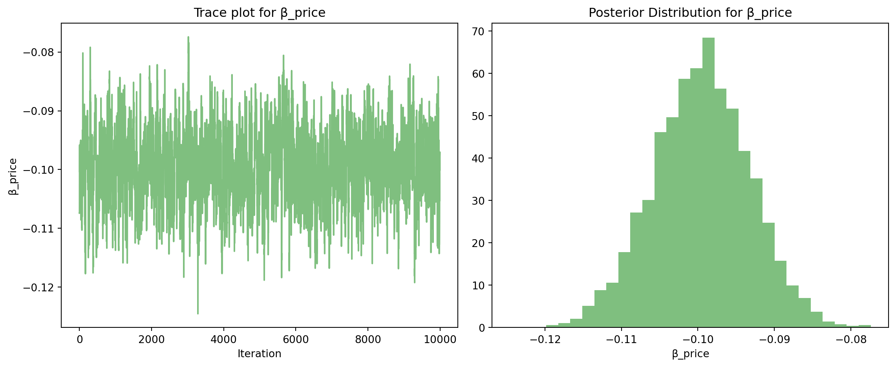

import pandas as pd
import numpy as np
from scipy.optimize import minimize
from numpy.linalg import inv
import matplotlib.pyplot as pltMultinomial Logit Model
This assignment expores two methods for estimating the MNL model: (1) via Maximum Likelihood, and (2) via a Bayesian approach using a Metropolis-Hastings MCMC algorithm.
1. Likelihood for the Multi-nomial Logit (MNL) Model
Suppose we have \(i=1,\ldots,n\) consumers who each select exactly one product \(j\) from a set of \(J\) products. The outcome variable is the identity of the product chosen \(y_i \in \{1, \ldots, J\}\) or equivalently a vector of \(J-1\) zeros and \(1\) one, where the \(1\) indicates the selected product. For example, if the third product was chosen out of 3 products, then either \(y=3\) or \(y=(0,0,1)\) depending on how we want to represent it. Suppose also that we have a vector of data on each product \(x_j\) (eg, brand, price, etc.).
We model the consumer’s decision as the selection of the product that provides the most utility, and we’ll specify the utility function as a linear function of the product characteristics:
\[ U_{ij} = x_j'\beta + \epsilon_{ij} \]
where \(\epsilon_{ij}\) is an i.i.d. extreme value error term.
The choice of the i.i.d. extreme value error term leads to a closed-form expression for the probability that consumer \(i\) chooses product \(j\):
\[ \mathbb{P}_i(j) = \frac{e^{x_j'\beta}}{\sum_{k=1}^Je^{x_k'\beta}} \]
For example, if there are 3 products, the probability that consumer \(i\) chooses product 3 is:
\[ \mathbb{P}_i(3) = \frac{e^{x_3'\beta}}{e^{x_1'\beta} + e^{x_2'\beta} + e^{x_3'\beta}} \]
A clever way to write the individual likelihood function for consumer \(i\) is the product of the \(J\) probabilities, each raised to the power of an indicator variable (\(\delta_{ij}\)) that indicates the chosen product:
\[ L_i(\beta) = \prod_{j=1}^J \mathbb{P}_i(j)^{\delta_{ij}} = \mathbb{P}_i(1)^{\delta_{i1}} \times \ldots \times \mathbb{P}_i(J)^{\delta_{iJ}}\]
Notice that if the consumer selected product \(j=3\), then \(\delta_{i3}=1\) while \(\delta_{i1}=\delta_{i2}=0\) and the likelihood is:
\[ L_i(\beta) = \mathbb{P}_i(1)^0 \times \mathbb{P}_i(2)^0 \times \mathbb{P}_i(3)^1 = \mathbb{P}_i(3) = \frac{e^{x_3'\beta}}{\sum_{k=1}^3e^{x_k'\beta}} \]
The joint likelihood (across all consumers) is the product of the \(n\) individual likelihoods:
\[ L_n(\beta) = \prod_{i=1}^n L_i(\beta) = \prod_{i=1}^n \prod_{j=1}^J \mathbb{P}_i(j)^{\delta_{ij}} \]
And the joint log-likelihood function is:
\[ \ell_n(\beta) = \sum_{i=1}^n \sum_{j=1}^J \delta_{ij} \log(\mathbb{P}_i(j)) \]
2. Simulate Conjoint Data
We will simulate data from a conjoint experiment about video content streaming services. We elect to simulate 100 respondents, each completing 10 choice tasks, where they choose from three alternatives per task. For simplicity, there is not a “no choice” option; each simulated respondent must select one of the 3 alternatives.
Each alternative is a hypothetical streaming offer consistent of three attributes: (1) brand is either Netflix, Amazon Prime, or Hulu; (2) ads can either be part of the experience, or it can be ad-free, and (3) price per month ranges from $4 to $32 in increments of $4.
The part-worths (ie, preference weights or beta parameters) for the attribute levels will be 1.0 for Netflix, 0.5 for Amazon Prime (with 0 for Hulu as the reference brand); -0.8 for included adverstisements (0 for ad-free); and -0.1*price so that utility to consumer \(i\) for hypothethical streaming service \(j\) is
\[ u_{ij} = (1 \times Netflix_j) + (0.5 \times Prime_j) + (-0.8*Ads_j) - 0.1\times Price_j + \varepsilon_{ij} \]
where the variables are binary indicators and \(\varepsilon\) is Type 1 Extreme Value (ie, Gumble) distributed.
The following code provides the simulation of the conjoint data.
Note
# set seed for reproducibility
set.seed(123)
# define attributes
brand <- c("N", "P", "H") # Netflix, Prime, Hulu
ad <- c("Yes", "No")
price <- seq(8, 32, by=4)
# generate all possible profiles
profiles <- expand.grid(
brand = brand,
ad = ad,
price = price
)
m <- nrow(profiles)
# assign part-worth utilities (true parameters)
b_util <- c(N = 1.0, P = 0.5, H = 0)
a_util <- c(Yes = -0.8, No = 0.0)
p_util <- function(p) -0.1 * p
# number of respondents, choice tasks, and alternatives per task
n_peeps <- 100
n_tasks <- 10
n_alts <- 3
# function to simulate one respondent’s data
sim_one <- function(id) {
datlist <- list()
# loop over choice tasks
for (t in 1:n_tasks) {
# randomly sample 3 alts (better practice would be to use a design)
dat <- cbind(resp=id, task=t, profiles[sample(m, size=n_alts), ])
# compute deterministic portion of utility
dat$v <- b_util[dat$brand] + a_util[dat$ad] + p_util(dat$price) |> round(10)
# add Gumbel noise (Type I extreme value)
dat$e <- -log(-log(runif(n_alts)))
dat$u <- dat$v + dat$e
# identify chosen alternative
dat$choice <- as.integer(dat$u == max(dat$u))
# store task
datlist[[t]] <- dat
}
# combine all tasks for one respondent
do.call(rbind, datlist)
}
# simulate data for all respondents
conjoint_data <- do.call(rbind, lapply(1:n_peeps, sim_one))
# remove values unobservable to the researcher
conjoint_data <- conjoint_data[ , c("resp", "task", "brand", "ad", "price", "choice")]
# clean up
rm(list=setdiff(ls(), "conjoint_data"))3. Preparing the Data for Estimation
The “hard part” of the MNL likelihood function is organizing the data, as we need to keep track of 3 dimensions (consumer \(i\), covariate \(k\), and product \(j\)) instead of the typical 2 dimensions for cross-sectional regression models (consumer \(i\) and covariate \(k\)). The fact that each task for each respondent has the same number of alternatives (3) helps. In addition, we need to convert the categorical variables for brand and ads into binary variables.
This section focuses on transforming the raw dataset into a format suitable for estimating a multinomial logit (MNL) model. The key steps include:
- Converting categorical variables to binary dummy variables: For example, the brand variable, which has three levels (e.g., N, P, H), is converted into two binary indicators: brand_N and brand_P. The base level brand_H is omitted to avoid multicollinearity (the dummy variable trap). This is done using pandas.get_dummies() with drop_first=True.
- Maintaining the choice-task-alternative structure: The data is structured at the respondent-task-alternative level, meaning each respondent completes multiple choice tasks, each involving three alternatives. This structure is necessary for computing utility and choice probabilities for each option within a task.
conjoint = pd.read_csv('conjoint_data.csv')
conjoint
conjoint['ad_yes'] = conjoint['ad'].apply(lambda x: 1 if x == 'Yes' else 0)
df_dummies = pd.get_dummies(conjoint, columns=['brand'], drop_first=True)
df_dummies.drop(columns=['ad'], inplace=True)
df_dummies = df_dummies.astype(int)
df_dummies| resp | task | choice | price | ad_yes | brand_N | brand_P | |
|---|---|---|---|---|---|---|---|
| 0 | 1 | 1 | 1 | 28 | 1 | 1 | 0 |
| 1 | 1 | 1 | 0 | 16 | 1 | 0 | 0 |
| 2 | 1 | 1 | 0 | 16 | 1 | 0 | 1 |
| 3 | 1 | 2 | 0 | 32 | 1 | 1 | 0 |
| 4 | 1 | 2 | 1 | 16 | 1 | 0 | 1 |
| ... | ... | ... | ... | ... | ... | ... | ... |
| 2995 | 100 | 9 | 1 | 12 | 0 | 0 | 0 |
| 2996 | 100 | 9 | 0 | 8 | 1 | 0 | 1 |
| 2997 | 100 | 10 | 0 | 28 | 1 | 1 | 0 |
| 2998 | 100 | 10 | 0 | 24 | 0 | 0 | 0 |
| 2999 | 100 | 10 | 1 | 16 | 0 | 0 | 0 |
3000 rows × 7 columns
4. Estimation via Maximum Likelihood
In this section, we implement the log-likelihood function for the MNL model and estimate the model parameters using maximum likelihood via scipy.optimize.minimize(). The estimated parameters include:
- β_brand_N: preference for brand N relative to the baseline (brand H)
- β_brand_P: preference for brand P relative to brand H
- β_ad_Yes: the effect of advertising on utility
- β_price: the effect of price on choice
The utility for each alternative is modeled as a linear combination of its features. We compute the softmax probability for each alternative and use these probabilities to construct the log-likelihood. The optimizer returns parameter estimates along with standard errors, from which we compute 95% confidence intervals for inference.
def log_likelihood(beta, data, negate=False):
beta_n, beta_p, beta_ad, beta_price = beta
utility = (
beta_n * data["brand_N"] +
beta_p * data["brand_P"] +
beta_ad * data["ad_yes"] +
beta_price * data["price"]
)
data = data.copy()
data["exp_utility"] = np.exp(utility)
data["denom"] = data.groupby(["resp", "task"])["exp_utility"].transform("sum")
data["prob"] = data["exp_utility"] / data["denom"]
data["log_likelihood"] = data["choice"] * np.log(data["prob"])
result = data["log_likelihood"].sum()
return -result if negate else result initial_beta = np.zeros(4)
result = minimize(log_likelihood, initial_beta, args=(df_dummies, True), method="BFGS")
# Extract estimates, standard errors, and 95% confidence intervals
beta_hat = result.x
hessian_inv = result.hess_inv
std_errors = np.sqrt(np.diag(hessian_inv))
conf_int = np.vstack([beta_hat - 1.96 * std_errors, beta_hat + 1.96 * std_errors]).T
# Print results
params = ["brand_N", "brand_P", "ad_Yes", "price"]
for i in range(4):
print(f"{params[i]}: Estimate = {beta_hat[i]:.4f}, StdErr = {std_errors[i]:.4f}, "
f"95% CI = [{conf_int[i, 0]:.4f}, {conf_int[i, 1]:.4f}]")brand_N: Estimate = 0.9412, StdErr = 0.1148, 95% CI = [0.7161, 1.1663]
brand_P: Estimate = 0.5016, StdErr = 0.1207, 95% CI = [0.2650, 0.7382]
ad_Yes: Estimate = -0.7320, StdErr = 0.0886, 95% CI = [-0.9057, -0.5583]
price: Estimate = -0.0995, StdErr = 0.0064, 95% CI = [-0.1119, -0.0870]5. Estimation via Bayesian Methods
This section implements Bayesian estimation using the Metropolis-Hastings MCMC algorithm. We assign prior distributions as follows:
- N(0, 5) for the binary features (brands and ad)
- N(0, 1) for the price coefficient
The MCMC algorithm runs for 11,000 iterations, discarding the first 1,000 as burn-in. Each iteration proposes a new set of coefficients by adding random noise (independently for each parameter) from a normal distribution with small variance. The posterior is evaluated in log space as the sum of the log-likelihood and log-prior.
We report the posterior means, standard deviations, and 95% credible intervals for each parameter. These are then compared to the MLE results to assess consistency and understand uncertainty from a Bayesian perspective.
# Define log-prior
def log_prior(beta):
# N(0,5) for first 3; N(0,1) for price
log_p = -0.5 * ((beta[0:3]**2) / 5 + (beta[3]**2) / 1)
return np.sum(log_p)
# Define log-posterior
def log_posterior(beta, data, negate=False):
return log_likelihood(beta, data, negate=False) + log_prior(beta)# Run MCMC using Metropolis-Hastings
np.random.seed(0)
n_iter = 11000
burn_in = 1000
beta_samples = np.zeros((n_iter, 4))
beta_current = np.zeros(4)
log_post_current = log_posterior(beta_current, df_dummies, negate=True)
proposal_std = np.array([0.05, 0.05, 0.05, 0.005])
for i in range(n_iter):
proposal = beta_current + np.random.normal(0, proposal_std)
log_post_proposal = log_posterior(proposal, df_dummies, negate=True)
log_accept_ratio = log_post_proposal - log_post_current
if np.log(np.random.rand()) < log_accept_ratio:
beta_current = proposal
log_post_current = log_post_proposal
beta_samples[i] = beta_current# Discard burn-in
posterior_samples = beta_samples[burn_in:]
# Compute summary statistics
posterior_means = posterior_samples.mean(axis=0)
posterior_sds = posterior_samples.std(axis=0)
posterior_cis = np.percentile(posterior_samples, [2.5, 97.5], axis=0).T
params = ["brand_N", "brand_P", "ad_Yes", "price"]
print("Posterior Summary:")
for i in range(4):
print(f"{params[i]}: Mean = {posterior_means[i]:.4f}, SD = {posterior_sds[i]:.4f}, "
f"95% CI = [{posterior_cis[i, 0]:.4f}, {posterior_cis[i, 1]:.4f}]")Posterior Summary:
brand_N: Mean = 0.9348, SD = 0.1124, 95% CI = [0.7189, 1.1746]
brand_P: Mean = 0.4915, SD = 0.1104, 95% CI = [0.2791, 0.7109]
ad_Yes: Mean = -0.7298, SD = 0.0859, 95% CI = [-0.8946, -0.5611]
price: Mean = -0.0995, SD = 0.0063, 95% CI = [-0.1123, -0.0873]# Optional Trace and Histogram Plot (example for price)
plt.figure(figsize=(12, 5))
plt.subplot(1, 2, 1)
plt.plot(posterior_samples[:, 3], color='green', alpha=0.5)
plt.title("Trace plot for β_price")
plt.xlabel("Iteration")
plt.ylabel("β_price")
plt.subplot(1, 2, 2)
plt.hist(posterior_samples[:, 3], bins=30, density=True, color='green', alpha=0.5)
plt.title("Posterior Distribution for β_price")
plt.xlabel("β_price")
plt.tight_layout()
plt.show()
6. Discussion
The parameter estimates from both the maximum likelihood and Bayesian approaches align well with intuition about consumer behavior. The positive coefficients for brand_N and brand_P indicate that, on average, consumers prefer these brands over the baseline brand H, with a stronger preference for brand_N (Netflix) over brand_P (Prime Video). This suggests a clear brand hierarchy in perceived utility.
The negative coefficient on price is both expected and meaningful. It implies that, holding other factors constant, an increase in price decreases the probability that a product is chosen. This is consistent with standard economic theory: consumers are price-sensitive and prefer cheaper options, all else being equal. The fact that _{} < 0 supports the validity of the model.
Interestingly, the ad_Yes coefficient is also negative, suggesting that the presence of advertising reduces utility. In this context, it may be that ads are perceived as intrusive or associated with lower-value offerings, leading to a lower probability of choice for advertised options.
To extend the model and better reflect real-world variation in consumer preferences, one could use a multilevel (hierarchical) model. In such models, individual-level parameters _i are assumed to vary across respondents and are drawn from a population distribution (e.g., _i (, )). This captures heterogeneity by allowing each respondent to weigh attributes differently. Estimation involves recovering both individual preferences and the population-level parameters, typically via hierarchical Bayes or simulated maximum likelihood. This approach is widely used in practical conjoint analysis for more accurate prediction and segmentation.